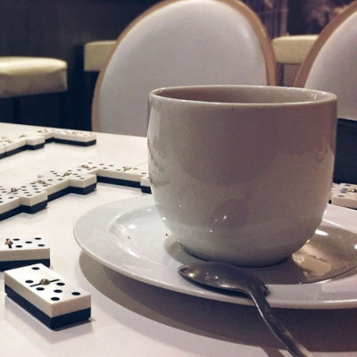

Who We Are
In 2014 the founders of Angry Nerd Cafe set off on a mission to create a new kind of coffee shop; one where our customers can get quality coffee, and create a community around not only coffee culture, but also all things nerdy. We appreciate all things nerd; whether that's comic books, movies, videos games, board games, and cosplay, and our goals has been to foster an enviounment where all nerds can come together and enjoy a great cup of coffee.
Our mission to create the best coffee drinks all starts with our belief that coffee should be ethical. We understand the abuse and exploitation of coffee growers worldwide, and as such we only purchase from suppliers that engage in fair trade with growers, and whose growers who oppose abuse and slavery, offering fair wages to their employees. We also believe in the best coffee comes from the best growing conditions and practices, so we only purchase organically grown coffee using sustainable growning practices.
As for our love of nerd culture, we love creating a welcoming space for our patrons to hang out and engage with each other. We encourge our patrons to mingle and play games together, and aim to provide an enviournment where everyone can create meaningful relationships. We host events weekly, each focusing on a different aspect of nerd culture, believing that lasting friendships can be built through joining together and having a great time as a community.
We also believe in giving back in our community. Not only do we offer a great rewards program for our patrons, but we also donate 10% of profits to local causes that we support. We engage in volunteering and encourage our employees and patrons to join us in supporting community causes. Angry Nerd Cafe understands that our success is directly related to the success of our community, and we will always strive to give back whenever possible.